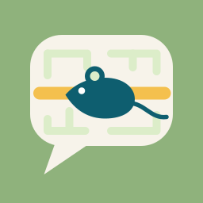

Rat Race
Arcade-Action im Labyrinth
Was ist Rat Race?
Rat Race ist ein Arcade-Spiel für iPhone und iPad. Als kleiner Kammerjäger mit Helm und Blitz-Blaster jagst du Ratten durch ein verwinkeltes Labyrinth – aber Vorsicht: Wer dich berührt, kostet ein Leben.
- Steuern: nach oben, unten, links oder rechts wischen – an der nächsten Kreuzung biegt der Held von selbst ab.
- Blitzstrahl: der runde Knopf unten feuert quer durch den ganzen Gang bis zur nächsten Wand. Danach lädt der Blaster drei Sekunden nach.
- Mehrfachtreffer: zwei Ratten mit einem Strahl zählen viermal so viel wie eine, drei sogar neunmal.
- Level: jedes Level bringt eine Ratte mehr, und alle werden schneller.
Kein Konto, keine Werbung, kein Tracking, keine In-App-Käufe. Rat Race braucht kein Internet.
Hilfe & Kontakt
Fragen, Fehler oder Ideen? Schreib mir gern eine E-Mail:
r.tetzlaff@online.de
Häufige Fragen
Ich höre keinen Ton.
Rat Race richtet sich nach dem Stummschalter: Ist das iPhone auf lautlos gestellt, ist auch das Spiel still.
Schalter umlegen und die Lautstärke mit den Tasten an der Seite erhöhen.
Die Hintergrundmusik fehlt, die Effekte sind aber da.
Das ist Absicht: Läuft gerade Musik aus einer anderen App, spielt Rat Race nur seine Effekte und lässt deine
Musik weiterlaufen. Sobald die andere Musik endet, setzt die Spielmusik wieder ein.
Der Held biegt nicht ab.
Abgebogen wird immer an der nächsten Kreuzung in die zuletzt gewischte Richtung. Ist dort eine Wand, läuft der
Held geradeaus weiter, bis es möglich ist.
Der Blitz-Knopf reagiert nicht.
Nach jedem Schuss lädt der Blaster drei Sekunden nach – solange ist der Knopf dunkel und der Balken unter dem
Helden rot. Direkt vor einer Wand wird nicht geschossen.